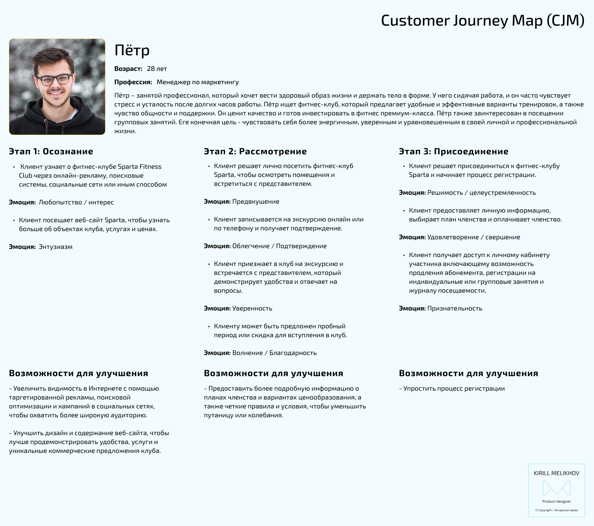
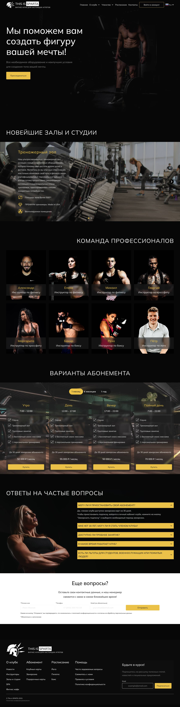
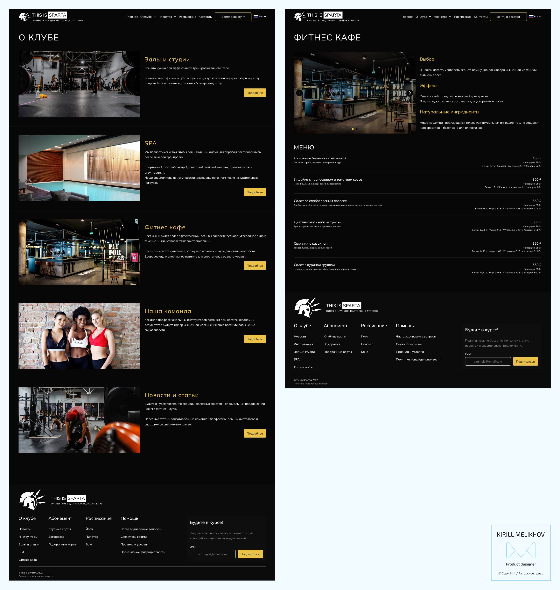
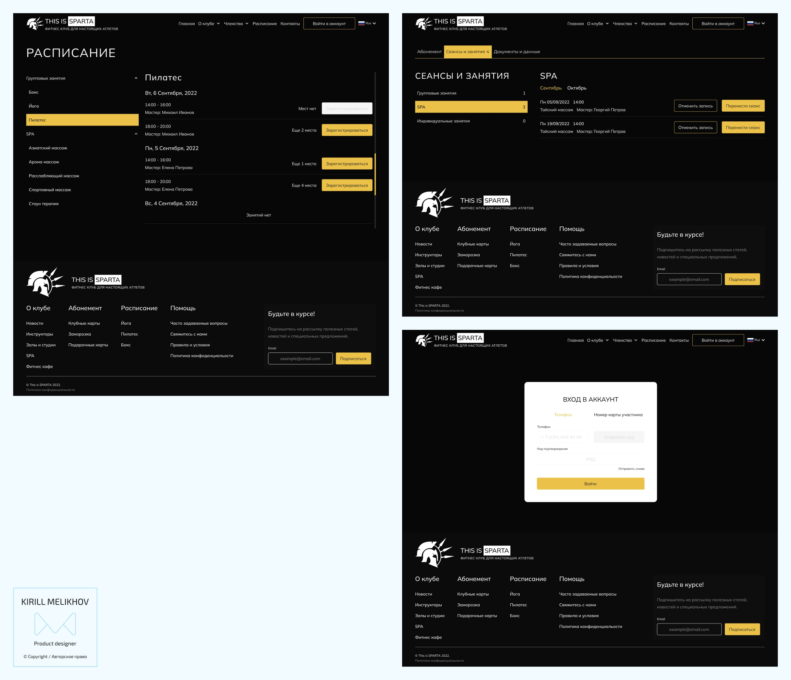

Тематическое исследование
UX исследование
Проект включал в себя всестороннее исследование UX, которое включало различные методы, такие как проведение собеседований с пользователями, проведение конкурентного аудита и создание карты путешествий клиентов (CJM).
В ходе опросов пользователей была получена ценная информация о проблемах, с которыми сталкиваются пользователи аналогичных веб-сайтов. Некоторые из выявленных ключевых проблем включают:
- Трудности с поиском информации об услугах клуба, тренажерах и стоимости подписки;
- Ограниченное или устаревшее расписание занятий, которое не отражает доступность в режиме реального времени;
- Сложные процессы входа в систему или регистрации участников, требующие от пользователей ввода чрезмерного объема информации;
- Разочарование пользователей и ошибки, возникающие в результате плохо разработанной системы онлайн-бронирования.
Кроме того, тщательный анализ веб-сайтов конкурентов выявил несколько заслуживающих внимания аспектов, включая сильные и слабые стороны и неиспользованные возможности.
Преимущества:
- Простая в использовании система онлайн-бронирования для планирования занятий;
- Интерактивный календарь, отображающий расписание занятий в режиме реального времени и наличие свободных мест;
- Удобная навигация и хорошо организованная структура веб-сайта;
- Информативные блоги и статьи, предлагающие советы по фитнесу и правильному питанию;
- Другие преимущества;
Недостатки:
- Ограниченная или труднодоступная информация об определенных услугах;
- Несогласованное или устаревшее расписание занятий и наличие свободных мест;
- Запутанный или неинтуитивный пользовательский интерфейс;
- Низкокачественный визуальный контент, включая изображения;
- Другие недостатки;
Нереализованные возможности:
- Ограниченные возможности для виртуальных или удаленных занятий;
- Недостаточные ресурсы для начинающих спортсменов;
- Нехватка ресурсов, ориентированных на пожилых людей или лиц с особыми потребностями;
- Неадекватные возможности обеспечения доступности для людей с ограниченными возможностями;
- Другие нереализованные возможности.
Использование карты путешествий клиента (CJM) имело решающее значение для обеспечения того, чтобы окончательный дизайн успешно соответствовал потребностям и ожиданиям целевой аудитории. Создав всеобъемлющий CJM, я смог визуально наметить весь путь клиента, начиная с начальной стадии ознакомления и заканчивая его решением присоединиться к клубу. Это позволило мне выявить и проанализировать болевые точки и потенциальные области для улучшения на протяжении всего процесса.

Это позволило мне создать веб-сайт, который ставит пользователя в центр внимания и расставляет приоритеты в функциях и контенте, которые улучшают общий пользовательский опыт, в конечном счете мотивируя посетителей к действию. В современном цифровом ландшафте использование CJM стало важнейшим инструментом в достижении целей проекта и разработке успешного веб-сайта.
Используя информацию, предоставленную Картой путешествий клиентов (CJM), я получил более глубокое понимание потребностей пользователей, болевых точек и мотиваций на протяжении всего их пребывания на веб-сайте. Этот целостный подход позволил мне определить ключевые точки соприкосновения и оптимизировать их в соответствии с ожиданиями пользователей, тем самым повысив их общую удовлетворенность и вовлеченность.
Финальный дизайн
Сайт был разработан в строгой, минималистичной и современной эстетике, дополненной четкой информационной архитектурой. Целевая страница содержит несколько ключевых разделов, в том числе увлекательный раздел о героях, информативный сегмент с подробным описанием оборудования, доступного в залах и студиях клуба, варианты подписки, полный список инструкторов и специальный раздел, посвященный часто задаваемым вопросам.
Дизайн сайта сочетает в себе простоту и элегантность, обеспечивая пользователям визуально приятный интерфейс. Благодаря четким линиям и оптимизированному интерфейсу он позволяет посетителям легко ориентироваться и получать доступ к необходимой им информации. Раздел героя служит фокусом, привлекая внимание пользователей и побуждая их к дальнейшему изучению.
Чтобы обеспечить прозрачность и облегчить принятие решений, на сайте выделен раздел, посвященный различному оборудованию, доступному в залах и студиях клуба. Это позволяет потенциальным участникам понять, на какие удобства и предложения они могут рассчитывать, укрепляя доверие и помогая им в процессе принятия решений.

Варианты подписки отображаются на видном месте на целевой странице, что позволяет пользователям просматривать различные планы подписки и выбирать тот, который наилучшим образом соответствует их потребностям. Предоставляя эту информацию заранее, сайт способствует эффективному взаимодействию с пользователями и помогает посетителям быстро определить подходящий для них вариант членства.
Кроме того, на целевой странице представлен полный список инструкторов, демонстрирующий их опыт и полномочия. Это позволяет пользователям ознакомиться с опытом и специальностями инструкторов, повышая их уверенность в предложениях клуба.
Наконец, включение хорошо структурированного раздела, посвященного часто задаваемым вопросам, демонстрирует приверженность к обслуживанию клиентов. Отвечая на распространенные запросы и проблемы, сайт предоставляет посетителям информацию, необходимую им для принятия обоснованных решений, снижая любые потенциальные барьеры для взаимодействия.

Раздел "О клубе" состоит из подразделов, содержащих специальные страницы, на которых представлены услуги, предложения и другая ценная информация.
В этом разделе пользователь может найти тщательно отобранные подразделы, которые содержат подробную информацию о различных аспектах деятельности клуба. Эти подразделы включают страницы, которые специально посвящены освещению услуг клуба, демонстрируя спектр предложений, доступных членам. На этих страницах представлена исчерпывающая информация о разнообразных услугах клуба - от фитнес-программ до специализированных тренировок.

Личный кабинет, предоставляемый членам клуба, предоставляет им эксклюзивный доступ к полному набору функций управления. В своем личном кабинете участники могут без особых усилий отслеживать свои записи о тренировках, внимательно следить за посещениями фитнес-зала, удобно продлевать подписку и даже использовать усовершенствованную электронную цифровую подпись (ЭЦП) для подписи важных документов. Эта универсальная платформа служит централизованным центром для участников, позволяющим им эффективно управлять своими занятиями, связанными с фитнесом, и административными задачами, обеспечивая бесперебойную и удобную работу на протяжении всего срока их членства.